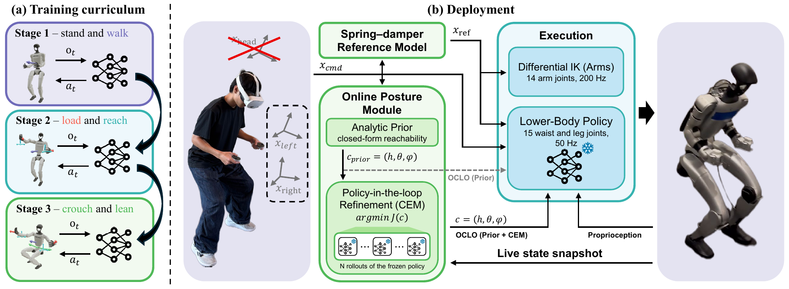

OCLO — Online-posture Compliant LOco-manipulation
Under review
Most humanoid loco-manipulation controllers require human motion data to learn whole-body coordination and posture, leaving policies reliant on external sources to provide this data. We present OCLO (Online-posture Compliant LOco-manipulation), a humanoid loco-manipulation system trained without human motion data and commanded only through two end-effector targets. Because these targets do not uniquely determine whole-body posture, OCLO generates pelvis height and torso orientation online using an analytic reachability prior, further refined through policy-in-the-loop sampling with a task-agnostic cost. OCLO also learns whole-body compliance by displacing end-effector references according to measured forces through a spring-damper model, encouraging the legs, waist, and pelvis to yield to external loads. In simulation, using the reachability prior leads to a 77.8% success rate in acquiring the commanded reference, a vast improvement over the 37.8% success rate accomplished without the prior. Further, refinement reduces end-effector orientation error across all evaluated tasks. The same posture module improves a pretrained SONIC controller on four of five tasks. Without compliance training, policies tend to lose balance under disturbances rather than sacrifice tracking. On a Unitree G1, OCLO maintains balance under end-effector disturbances that cause its ablations to fail and performs seven loco-manipulation tasks, including crouched walking and picking up a box from a low surface.
A lower-body policy is trained with PPO through a three-stage curriculum in which every command is sampled procedurally: velocity commands first, then end-effector targets with interaction forces, then pelvis-height and torso commands. No motion capture, retargeted motion, or demonstrations are used. At deployment the two hand targets pass through a spring–damper reference model, an online posture module chooses pelvis height and torso orientation, differential IK resolves the arms, and the frozen policy drives the legs and waist.

Two hand targets do not determine how low the pelvis should sit or how far the torso should lean. OCLO computes that posture itself. An analytic reachability prior maps the targets to pelvis height and torso pitch in closed form (0.07 ms on a CPU), and an optional policy-in-the-loop CEM refinement rolls the frozen policy forward under 64 candidate postures and keeps the one with the lowest effort, compliance, and stability cost. The cost contains no task term.
Real-robot tasks on a Unitree G1 with OCLO (Prior), teleoperated through two hand controllers with no posture command. When the hands press on a surface or pull on a cart, the end-effector references yield to the measured contact force and the legs, waist, and pelvis are trained to absorb it, so the robot can wipe, push, and pull without fighting the contact.
External forces are applied to the torso and through the end effectors while the robot holds a posture. Two ablations isolate the training signals. B1 is trained without end-effector target pose and force sampling, and B2 with target pose sampling but without force sampling. Both handle torso disturbances but fall when the force enters through the arms. OCLO keeps its balance and recovers.
Ablation: a policy trained without end-effector force sampling, with or without end-effector target pose sampling.
| Method | Torso pull | Torso push | EE pull | EE push | Lateral pull | |
|---|---|---|---|---|---|---|
| 40–60 N | 20–40 N | 50–70 N | 40–60 N | |||
| B1: no EE targets, no EE forces | 8/10 | 7/10 | 1/10 | – | 0/10 | 0/10 |
| B2: EE targets, no EE forces | 8/10 | 8/10 | 5/10 | – | 3/10 | 2/10 |
| OCLO (Prior) | 10/10 | 9/10 | 10/10 | 10/10 | 9/10 | 8/10 |
| OCLO (Prior + CEM) | 9/10 | 9/10 | 9/10 | – | 8/10 | 8/10 |
Pulls applied through an inline force gauge at the stated range. Pushes applied manually, the EE push through a PVC pipe. B1, B2, and OCLO (Prior) hold the same commanded posture, while OCLO (Prior + CEM) refines it online. A dash marks an untested condition.
The operator holds two hand controllers. Only their poses and one clutch button per hand reach the robot: no head pose, no chest or hip tracker, no exoskeleton. Pelvis height and torso orientation follow from the hand targets.
A citation will be available after the review period.